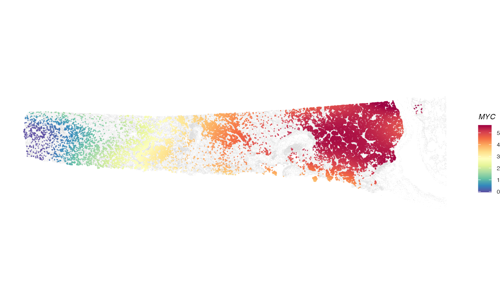
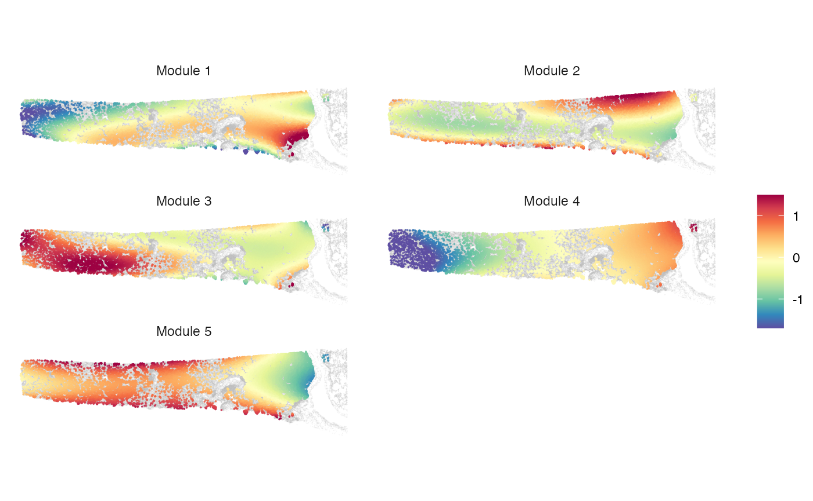

Introduction
We will demonstrate how to use ctSVG to identify cell-type-specific SVGs with cell type annotations from Xenium data. The Xenium dataset of a human lung cancer sample was downloaded from the 10x website.
Load package
library(ctSVG)
mydir <- "~/Desktop/Research/ctSVG/xenium_human_lungcancer"
list.files(mydir)
#> [1] "coord.rds" "expr.rds" "sc.rds"
expr <- readRDS(file.path(mydir, "expr.rds"))
coord <- readRDS(file.path(mydir, "coord.rds"))
sc <- readRDS(file.path(mydir, "sc.rds"))
str(expr)
#> Formal class 'dgCMatrix' [package "Matrix"] with 6 slots
#> ..@ i : int [1:4838175] 4 76 81 97 160 203 249 283 287 293 ...
#> ..@ p : int [1:151678] 0 15 53 71 104 166 198 232 274 305 ...
#> ..@ Dim : int [1:2] 377 151677
#> ..@ Dimnames:List of 2
#> .. ..$ : chr [1:377] "ABCC11" "ACE2" "ACKR1" "ACTA2" ...
#> .. ..$ : chr [1:151677] "aaaaficg-1" "aaabbaka-1" "aaabbjoo-1" "aaablchg-1" ...
#> ..@ x : num [1:4838175] 6.27 6.27 6.27 6.27 6.27 ...
#> ..@ factors : list()
str(coord)
#> num [1:151677, 1:2] 202 179 186 200 197 ...
#> - attr(*, "dimnames")=List of 2
#> ..$ : chr [1:151677] "aaaaficg-1" "aaabbaka-1" "aaabbjoo-1" "aaablchg-1" ...
#> ..$ : chr [1:2] "row" "col"
str(sc)
#> Factor w/ 14 levels "0","1","2","3",..: 10 3 2 2 3 1 2 11 2 2 ...
#> - attr(*, "names")= chr [1:151677] "aaaaficg-1" "aaabbaka-1" "aaabbjoo-1" "aaablchg-1" ...
sc <- sc[sc %in% levels(sc)[1:3]]
sc <- droplevels(sc)Identify spatially variable genes within each cell cluster
suppressMessages(suppressWarnings(
clutestRes <- ctsvg_test(expr = expr, coord = coord, sc = sc)
))
head(clutestRes)
#> cluster gene fdr logpval pval fstat knotnum
#> 0.MYC 0 MYC 0 -4311.2679 0 695.6332 0
#> 0.BASP1 0 BASP1 0 -1441.4703 0 209.6989 0
#> 0.MET 0 MET 0 -1366.8257 0 198.4745 0
#> 0.PCSK2 0 PCSK2 0 -1131.1431 0 163.4559 0
#> 0.TCIM 0 TCIM 0 -998.8474 0 144.0727 0
#> 0.TNC 0 TNC 0 -780.9037 0 112.5533 0Fit spatial gene expression patterns within each cell cluster
clufitRes <- ctsvg_fit(expr = expr, coord = coord, sc = sc)Visualize spatial patterns of a single gene
plotGene(expr = expr, clufitRes = clufitRes, coord = coord, sc = sc,
gene = clutestRes$gene[1], cellclu = "0", background = TRUE)
Identify gene modules within each cell cluster
moduleRes <- ctsvg_module(clutestRes = clutestRes, clufitRes = clufitRes, sc = sc)Visualize spatial patterns of metagenes within a cell cluster
plotMetagene(clufitRes = clufitRes, coord = coord, sc = sc,
moduleRes = moduleRes, cellclu = "0", background = TRUE)
Session Info
sessionInfo()
#> R version 4.4.1 (2024-06-14)
#> Platform: aarch64-apple-darwin20
#> Running under: macOS 15.6.1
#>
#> Matrix products: default
#> BLAS: /Library/Frameworks/R.framework/Versions/4.4-arm64/Resources/lib/libRblas.0.dylib
#> LAPACK: /Library/Frameworks/R.framework/Versions/4.4-arm64/Resources/lib/libRlapack.dylib; LAPACK version 3.12.0
#>
#> locale:
#> [1] en_US.UTF-8/en_US.UTF-8/en_US.UTF-8/C/en_US.UTF-8/en_US.UTF-8
#>
#> time zone: America/New_York
#> tzcode source: internal
#>
#> attached base packages:
#> [1] stats graphics grDevices utils datasets methods base
#>
#> other attached packages:
#> [1] ctSVG_1.0
#>
#> loaded via a namespace (and not attached):
#> [1] RColorBrewer_1.1-3 rstudioapi_0.16.0 jsonlite_1.8.8
#> [4] magrittr_2.0.3 spatstat.utils_3.1-0 farver_2.1.2
#> [7] rmarkdown_2.28 fs_1.6.4 ragg_1.3.2
#> [10] vctrs_0.6.5 ROCR_1.0-11 spatstat.explore_3.3-2
#> [13] htmltools_0.5.8.1 findPC_1.0 sass_0.4.9
#> [16] sctransform_0.4.1 parallelly_1.38.0 KernSmooth_2.23-24
#> [19] bslib_0.8.0 htmlwidgets_1.6.4 desc_1.4.3
#> [22] ica_1.0-3 plyr_1.8.9 plotly_4.10.4
#> [25] zoo_1.8-12 cachem_1.1.0 igraph_2.0.3
#> [28] mime_0.12 lifecycle_1.0.4 pkgconfig_2.0.3
#> [31] Matrix_1.7-0 R6_2.5.1 fastmap_1.2.0
#> [34] fitdistrplus_1.2-1 future_1.34.0 shiny_1.9.1
#> [37] digest_0.6.37 colorspace_2.1-1 patchwork_1.3.0
#> [40] Seurat_5.1.0 tensor_1.5 RSpectra_0.16-2
#> [43] irlba_2.3.5.1 textshaping_0.4.0 labeling_0.4.3
#> [46] progressr_0.14.0 fansi_1.0.6 spatstat.sparse_3.1-0
#> [49] httr_1.4.7 polyclip_1.10-7 abind_1.4-8
#> [52] compiler_4.4.1 proxy_0.4-27 withr_3.0.1
#> [55] DBI_1.2.3 fastDummies_1.7.4 highr_0.11
#> [58] MASS_7.3-60.2 classInt_0.4-10 units_0.8-5
#> [61] tools_4.4.1 lmtest_0.9-40 httpuv_1.6.15
#> [64] future.apply_1.11.2 goftest_1.2-3 glue_1.7.0
#> [67] nlme_3.1-164 promises_1.3.0 grid_4.4.1
#> [70] sf_1.0-18 Rtsne_0.17 cluster_2.1.6
#> [73] reshape2_1.4.4 generics_0.1.3 gtable_0.3.5
#> [76] spatstat.data_3.1-2 class_7.3-22 tidyr_1.3.1
#> [79] data.table_1.16.2 sp_2.1-4 utf8_1.2.4
#> [82] spatstat.geom_3.3-3 RcppAnnoy_0.0.22 ggrepel_0.9.6
#> [85] RANN_2.6.2 pillar_1.9.0 stringr_1.5.1
#> [88] spam_2.11-0 RcppHNSW_0.6.0 later_1.3.2
#> [91] splines_4.4.1 dplyr_1.1.4 lattice_0.22-6
#> [94] survival_3.6-4 deldir_2.0-4 tidyselect_1.2.1
#> [97] miniUI_0.1.1.1 pbapply_1.7-2 knitr_1.48
#> [100] gridExtra_2.3 scattermore_1.2 xfun_0.47
#> [103] matrixStats_1.3.0 stringi_1.8.4 lazyeval_0.2.2
#> [106] yaml_2.3.10 evaluate_0.24.0 codetools_0.2-20
#> [109] tibble_3.2.1 cli_3.6.3 uwot_0.2.2
#> [112] xtable_1.8-4 reticulate_1.39.0 systemfonts_1.1.0
#> [115] munsell_0.5.1 jquerylib_0.1.4 Rcpp_1.0.13
#> [118] globals_0.16.3 spatstat.random_3.3-2 png_0.1-8
#> [121] spatstat.univar_3.0-1 parallel_4.4.1 pkgdown_2.1.0
#> [124] ggplot2_3.5.1 dotCall64_1.2 listenv_0.9.1
#> [127] viridisLite_0.4.2 e1071_1.7-16 scales_1.3.0
#> [130] ggridges_0.5.6 SeuratObject_5.0.2 leiden_0.4.3.1
#> [133] purrr_1.0.2 rlang_1.1.4 cowplot_1.1.3